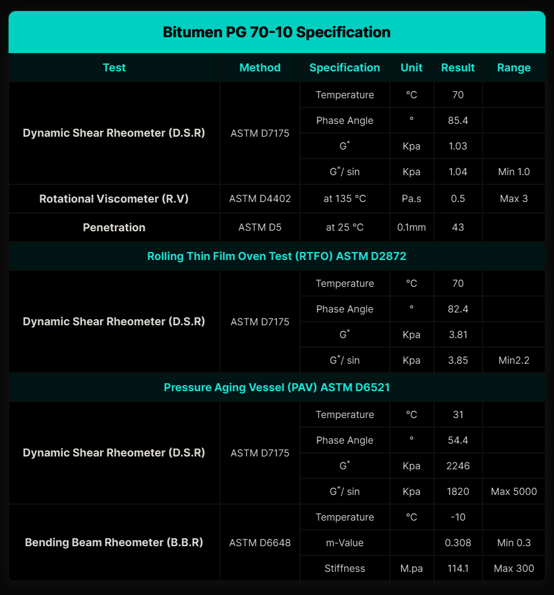

Bitumen PG 70‑10 – General Description │ Iran Bitumen Supply │ IBITMCO
Bitumen PG 70‑10 is a premium Superpave Performance Grade asphalt binder designed for regions that experience prolonged high temperatures along with moderate winter conditions. As part of the Superpave PG system, PG 70‑10 is formulated to deliver exceptional resistance to rutting and deformation in hot climates while maintaining enough flexibility to withstand occasional temperature drops to –10°C. This balance of stiffness and elasticity ensures long‑lasting pavement performance in areas where summer temperatures routinely exceed 70°C. PG 70‑10 is particularly well suited for environments where pavements are exposed to intense heat, heavy traffic, and frequent braking forces. Its high‑temperature stability makes it a preferred binder for expressways, major city roads, and industrial zones in arid and semi‑arid regions. The binder maintains its structural integrity under sustained loading, resisting shoving, rutting, and surface deformation even under extreme thermal stress. Manufactured in strict accordance with AASHTO M320 specifications, PG 70‑10 offers consistent quality and dependable performance across all production batches. It provides excellent adhesion to aggregates, ensuring strong cohesion within the asphalt mix. Its workability during mixing and compaction contributes to uniform pavement structure, while its resistance to bleeding and softening enhances durability in high‑temperature environments.
Key Specifications
PG 70‑10 is classified as a Superpave Performance Grade asphalt binder with a high‑temperature grade of 70°C and a low‑temperature grade of –10°C. Its compliance with AASHTO M320 confirms that it meets the required standards for stiffness, elasticity, and resistance to both thermal and mechanical stresses. This performance range makes it suitable for climates with extreme heat and mild winter fluctuations.
Main Applications
PG 70‑10 is widely used in urban roads and main arterials where stop‑and‑go traffic demands a binder capable of resisting rutting and surface deformation. It is equally effective on national and regional highways located in hot, dry climates where pavements must endure sustained thermal loading. Industrial access roads, commercial driveways, and bus lanes also benefit from PG 70‑10’s ability to withstand heavy axle loads and repeated thermal cycles without compromising structural integrity.
Key Benefits
The primary advantage of PG 70‑10 is its exceptional high‑temperature performance, which prevents rutting and deformation under heavy traffic and extreme heat. Its moderate low‑temperature flexibility allows it to perform reliably in regions with minimal winter cracking risk. Pavements constructed with PG 70‑10 enjoy extended service life, reduced maintenance frequency, and improved long‑term durability. The binder’s strong adhesion and consistent performance ensure reliable mix behavior and long‑lasting pavement strength in demanding environments.

Specification of Bitumen PG 70-10